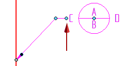
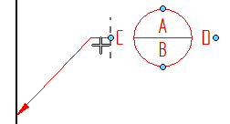

Snap indicators for annotations
When you drag an annotation edit handle, dashed lines indicate snap-to positions. For information about the handles mentioned below, see the help topic, Annotation edit handles.
- Annotation leader lines
-
Leader lines snap to horizontal and vertical orientations at 0, 90, 180, and 270 degrees. They also can snap in 45-degree increments. The following aid is displayed when you begin to move an annotation. When you drag the annotation onto one of the dashed lines, it snaps to that orientation.

- Annotation break lines
-
When you Alt+drag the edit handle at the point where the break line connects to an annotation, horizontal or vertical dashed lines display at each snap point. The break line is always perpendicular to the dashed line indicator.


- Leader lines with jogs
-
When you select an edit point inserted into a a leader line and begin to drag it, dashed lines indicate the new orientation of the line segment if you snap to it.